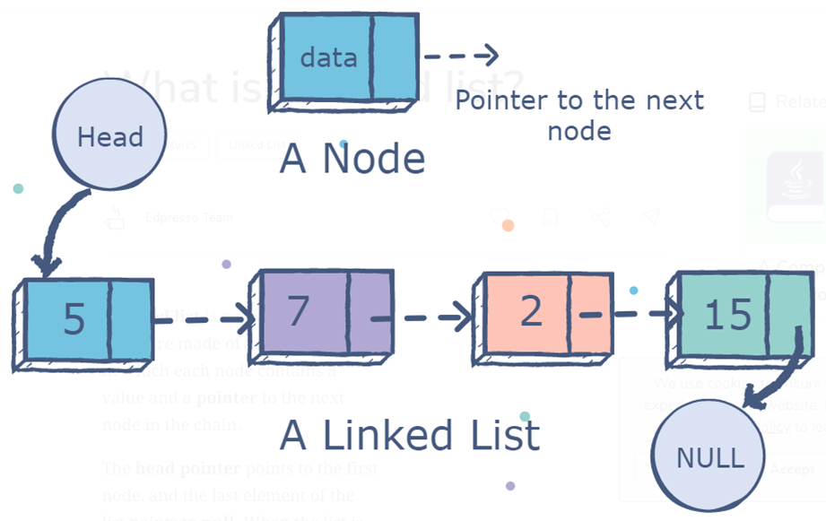
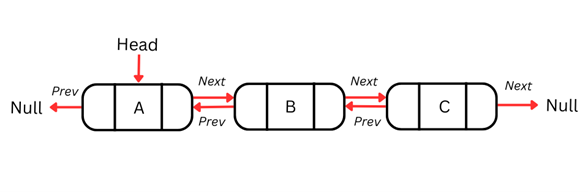
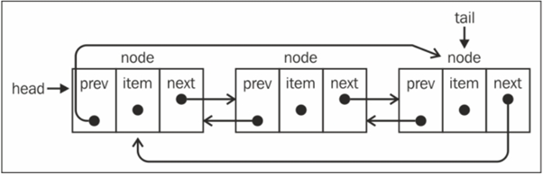
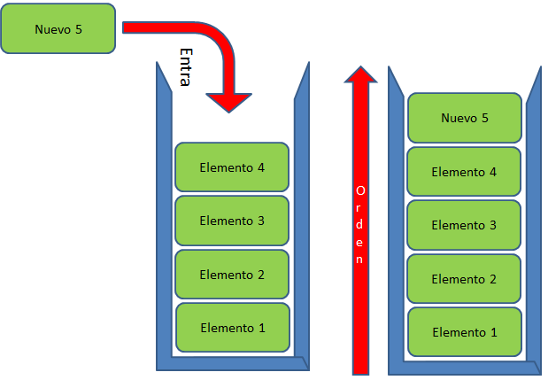
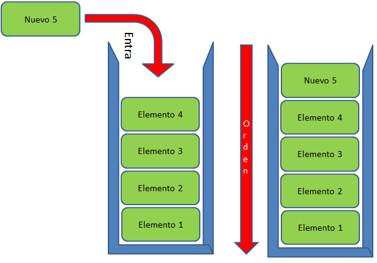
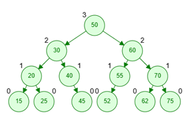

Una lista enlazada es una colección ordenada de elementos de datos. Un elemento de datos se puede representar como un nodo en una lista enlazada. Cada nodo consta de dos partes: datos y puntero al siguiente nodo.
A diferencia de los arreglos, los elementos de datos no se almacenan en ubicaciones contiguas. Los elementos o nodos de datos están vinculados mediante punteros, por lo que se denomina lista enlazada.
Una lista enlazada tiene las siguientes propiedades:
• Los nodos sucesivos están conectados por punteros.
• El último nodo apunta a null.
• En head Se mantiene el puntero que apunta al primer nodo de la lista.
• Una lista vinculada puede crecer y reducirse durante la ejecución del programa.
• Asigna memoria a medida que crece la lista. A diferencia de los arreglos, que tienen un tamaño fijo. Por lo tanto, el límite superior del número de elementos debe conocerse de antemano. Generalmente, la memoria asignada es igual al límite superior independientemente del uso. Ésta es una de las ventajas clave de usar una lista enlazada sobre un arreglo.
A diferencia de un arreglo, que almacena datos de forma contigua en la memoria, una lista enlazada puede insertar o eliminar fácilmente nodos de la lista sin reorganizar toda la estructura de datos.

Las listas doblemente enlazadas son una estructura de datos lineal similar a las listas enlazadas simples, pero con una diferencia clave: cada nodo en una lista doblemente enlazada contiene dos punteros, uno al siguiente nodo y otro al nodo anterior. Esto permite recorrer la lista en ambas direcciones, lo que facilita la implementación de ciertas operaciones y mejora la eficiencia en algunos casos. 
Una lista enlazada circular puede tener solo una dirección de referencia (como la lista enlazada) o una referencia doble como la lista doblemente enlazada. La única diferencia entre la lista enlazada circular y una lista enlazada es que el puntero next ( ) del último elemento tail.next no hace una referencia a null, sino al primer elemento ( head).Y una lista enlazada doblemente circular tiene tail.next apuntando al head elemento y head.prev apuntando al tail elemento: 
Una pila es una estructura para almacenar datos que opera de forma lineal y unidireccional. Esto significa que solo hay una forma para agregar elementos y estos se incorporan en un orden determinado en una sola dirección.
Las pilas son útiles cuando necesitamos una estructura de dato que terminaremos desplegando de forma cronológica de más a menos recientes (como por ejemplo una lista de últimos tweets o artículos). En este caso, el dato ingresado más recientemente es el primero que sacaremos y mostraremos.
Tradicionalmente, una pila debe contar con métodos que permitan: agregar nuevos elementos, sacarlos y revisarlos (uno o más). Si bien al hacer una implementación propia, podemos llamar a estos métodos de cualquier forma, existe una convención acordada de usar las siguientes definiciones:
● push: Agrega un nuevo valor a la pila, ubicándolo al final de ésta.
● pop: Retorna el último valor ingresado a la pila, sacándolo de ésta.
● peek: Retorna el último valor ingresado a la pila, sin sacarlo de ésta.
● size: Retorna el número de elementos que contiene la pila.
● print: Muestra el contenido de la pila.

Una cola es una estructura de datos muy similar a una Pila, es decir, también opera de forma lineal y unidireccional (se agregan elementos de inicio a fin). La gran diferencia radica en la forma en que estos elementos son sacados después. Cuando usamos una Pila, ésta opera con una modalidad LIFO (Last In First Out), mientras que con una Cola es FIFO (First In First Out), es decir, siempre el primer elemento que agreguemos, será el primero que saquemos de ella.
Dos de los usos más comunes de colas hoy en día están presentes en herramientas y procesos que vemos a diario: colas de tareas o trabajos (jobs), como por ejemplo Resque, Sidekiq o Kue, y colas de mensajería. En ambos casos, es necesario que los primeros datos que ingresen sean los primeros en salir y estén ordenados de forma cronológica y por orden de llegada.
Para poder operar correctamente sobre una cola, es necesario contar con métodos que permitan: agregar elementos, sacar elementos, mostrar elementos (el siguiente o la cola completa) y retornar el tamaño. Al igual que con las pilas, si bien al hacer una implementación propia podemos llamar estos métodos de cualquier manera, por lo general se opta por la siguiente convención:
• enqueue: Agrega un nuevo elemento a la cola, situándolo al final de ésta.
• dequeue: Retorna el primer elemento de la cola, quitándolo de ésta.
• peek: Retorna el primer elemento de la cola, sin quitarlo de ésta.
• size: Retorna el número de elementos que contiene la cola.
• print: Muestra el contenido de la cola.
Opcionalmente, algunas implementaciones incluyen un método llamado isEmpty, que retorna true/false dependiendo si la cola está vacía. De no existir, esto se puede inferir al llamar a size.

Los árboles (trees) son una estructura de datos muy común, que se
define de forma recursiva como una colección de nodos, empezando
por un nodo raíz, donde cada nodo es una estructura de datos que
contiene un valor, y opcionalmente una lista de referencias a otros
nodos (sus hijos), con la limitación de que ninguna referencia esté
duplicada, y que ninguno apunte al nodo raíz.
Un árbol es una estructura no lineal, que tiene un principio — el nodo
raíz — y este nodo va a contener referencias a otros nodos — sus hijos
— los cuales van a ser el mismo tipo de estructura (un nodo), y por lo
tanto podrán contener o no su propia lista de referencias a otros nodos.
La imagen presenta el arbol creado en consola deacuerdo a las necesidades especificadas.

Universiadad Politecnica de Gomez Palacio
Maryjose Walle Quiñones
23070081 ITI 4B
Estructura de Datos